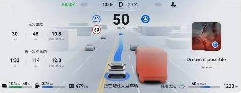
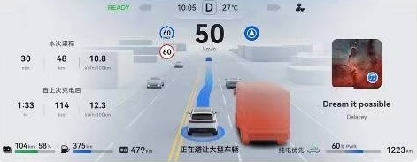

Project Overview
This project focuses on UX research for the Huawei Car, aiming at developing proper degree of trust while using advanced driving assistance (L2+ level) by designing optimized communication in car.
Team and My Role
Our team consisted of:
- A project owner (designer)
- 2 UX researchers
- 3 designers
- A developer
My role was to plan and implement research projects and deliever insights for the design team.
Timeline and tools
- Desk research: about 6 weeks for proof of concept, contineous research on demand
- Study 1: 3-4 weeks
- Study 2: 3-4 weeks
Data was collected in our lab with driving simulator, simulation video or recorded screen video.
Goals and Challenges
Driving with a non-human copilot can be painful and even dangerous. How to understand the real user painpoints and needs in different use cases? How can we facilitate their cooperation and communication? We tried to understand the process and develop according solutions.
Challenges would be:
- understanding of technology limits
- selection of valuable use cases
- user segmentation
Approaches and Methods
- competitor analysis
- video and use scenario analysis
- user persona
- user journey
- contextual inquiry
- A/B testing, usability testing
- design workshop
Process
- Phase 1/study 1: understanding users and contexts
- Phase 2/study 2: pre-prototyping, prove of concept, design workshop
- phase 3/study 3: post-prototyping, testing
Result and Impact
- insights delievered
- prototypes improved
- design demo accepted by HW Headquater
Study 1
Objectives
Our team at HW Munich Research Center focused on developing innovative Human-Machine Interface (HMI) solutions for intelligent car pilots using future technologies. So generally we would like to find some solutions for current pain-points using Advanced Driver Assistance Systems (ADAS) in cars. Specifically, we would like to know:
- What capabilities does ADAS have at its current stage?
- What is still not satisfying in reality?
- What can we do to improve the experience using ADAS?
Approaches
To generate a wide range of user insights and support our ideation, I have focused on the following sources and methods:
- Market analysis and benchmarking: We conducted competitive analysis to analyze the features and solutions of key competitors. After that strengths and weaknesses of competitors, as well as opportunities for our product were identified.
- Literature and patent search: By summarizing insights from literature (e.g., IEEE conferences and journals) and patents (Google Patents, internal databases), we were able to know trends and limitations of technology, have also collected info about relevant theories, design principles, and specific findings.
- User car forums, past datasets, and empirical studies: By analyzing car test videos in natural contexts and summarizing findings from similar qualitative studies, we were able to identify key use cases, user journey and pain-points, and possible individual factors that might influence experience
Insights
We have gained a deeper understanding to our topic and decided to work specifically on the following questions:
- Which information has the highest priority from user perspective in which key phases or use cases?
- communication strategies of these information
- possible personalization/segmentation strategy
Journey and Pain-points
Videos posted on social media and qualitative case study in literature have helped us gain insights of pain-points, journey, and key use cases.

Study 2
Objectives
We would like to know the information priority of users facing different driving events/in different use phases or cases. Specific contexts, different user groups were given special attention in our study. Additionally, we can also collect user evaluation of the benchmark version and ideas of improvement.
Approaches
A video-based interview was used for the research aim. We had some meetings with our designers and developer in order to communicate about the specifications of event video clips. After that we have constructed our interview schema based on our goals. We tried to maximize the ecological validity of our research and allowed the participants to go through the event in a (quasi-)naturalistic context, so that we can collect some real responses and behaviors. Post-event interview was designed to collect subjective data about thoughts and reasons for some user responses. Altogether data from 12 participants were collected during 2 weeks.
Insight
After this study we have confirmed some hypotheses we had before. We have collected information about the priority of needed communication and user perspecitve on improvement. Key individual factors influencing the experience were also identified.
Interview
Examples of interview responses
Card Sorting
To ensure that the screen's information architecture is aligned with user expectations, we had added in a card sorting task into our interview study. Although we have already some categories in our mind, we still want to hear about user opinion on the categorization. Another goal was also to find their evaluation of the priority of these information types at different phases of each use case.

Persona
According to the results of the desk research, we have identified some important driving experience variables which can influence the interaction and experience. Based on these variables user groups (eg. groups with more experience of ADAS using or less) were formed and we can then create personas for each of our user segments. It helped us understand the user needs per group and can facilitate further personalization strategies.
Design Workshop
The goal of design workshop is to communicate the results from the first interview study and facilitate ideation for an improved version. The workshop contains:
- empathy map: showing our findings in different visual forms, such as user journey, personas, and card sorting results together with quantitative results such as subjective rating across driving scenarios.
- problem definition: pain-points were summarized across user groups and driving scenarios.
- ideation: solutions were collected, some other solutions found in desk research phase were also presented. We had discussion about pros and cons and made decision for versions.
- prototype construction: some revised versions were created.

Study 3
Objectives
The selected design version was then compared with the benchmark version which has been used in the interview study. The main goals were to test the effect of our changes and understand the reasons of user choices.
Approaches
We combined a/b testing and usability testing. For each design changes we added evaluation rating and follow-up questions. To avoid bias, the order of presenting AB versions was also balanced among different scenarios. Restrictively speaking this was a usability testing for the small sample and qualitative focus.
Deliverables/Insight
We have confirmed the positive effect of changed elements and understood the contexts behind user choices.
Usability testing
The selected design version was then compared with the benchmark version which has been used in the interview study. For each design changes we added evaluation rating and follow-up questions. To avoid bias, the order of presenting AB versions was also balanced among different scenarios.We developed a criterion system to evaluate UX for this study. Not only communication quality (understanding) but also emotional aspects were measured using subjective rating, task performance measurement, behavior observation, etc.
Final design in public

 
